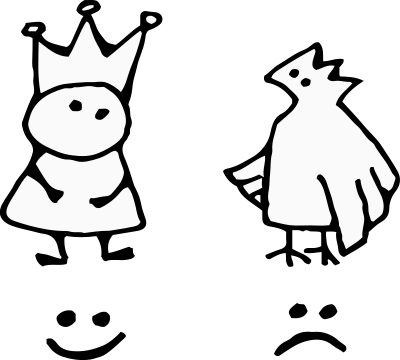
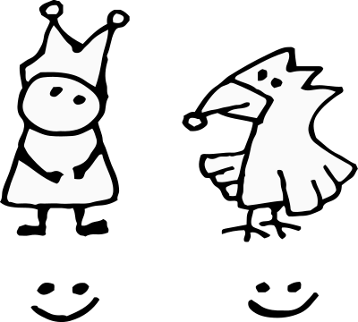
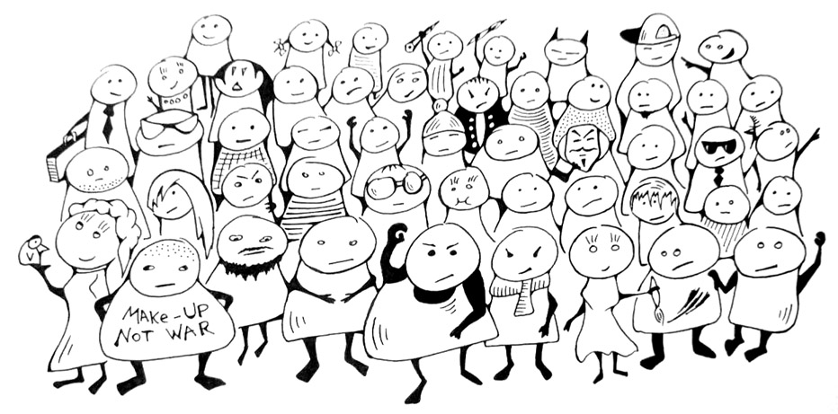

Я встретил нашего короля на морском побережье. Он выглядел здоровым и счастливым, в рваных одеждах со сломанной королевской короной. На мой вопрос, что случилось, король рассказал чудесную историю. Я перескажу его словами.
С сердечным поклоном, барон фон Гамбургер.
Королевская Корона
24500 лет до нашей эры
Супервулканами называют большие извержения. В отличие от обычных вулканов у них нет высоких конусов, но диаметр отверстия огромен. Извержения такие сильные, что могут повлиять на климат и изменить мир. Самый молодой супервулкан по имени Таупо жил неподалёку от Новой Зеландии почти 30 тысяч лет назад.
В те годы король Апп прогуливался вокруг Таупо и наслаждался видами. По дороге встретил ворона без клюва.
Клюв у ворона был сломан, вид у ворона был глупый, взгляд у ворона был гордый и целеустремлённый.
«Соврешенно очевидно, что клюв ты потерял в глупой, но геройской ситуации, — отметил король при встрече».
«Конечно да, — подтвердил ворон».
Накануне вечером, от потоков лавы загорелся лес. Ворон всю ночь летал спасая мелких грызунов. А когда уставшим утром полетел домой, то заснул на лету и клювом врезался в скалу.
Теперь у ворона три медали за храбрость и почётная грамота, но без клюва нет никакой надежды на счастливую жизнь. От отчаяния решил прыгать в жерло вулкана.

Король выслушал беду и смахнул слезу, потому что птичку жалко. Отломал кусок своей королевской короны, и смастерил из куска новый клюв для ворона. Хороший получился клюв — ¹) красивый, ²) удобный, ³) прочный.

Обрадовавшийся ворон улетел домой и всем рассказал о случившемся. Красивая легенда и новая оригинальная форма прославили корону. Вскоре она стала главным логотипом всего мира. Логотип появлялся на кнопках и рекламных баннерах. Был почётным представителем на дипломатических встречах и печатался на майках и сувенирах (ещё не печатался).
Для короля Аппа, логотип всегда оставался родным королевским аксессуаром. Починив ворону клюв, король Апп надел на голову остатки короны и продолжил прогулку.
Изумительное место
Наши дни
[IMG Изумительное место]
TXT Диалоги
«Кто здесь? — удивился король Апп».
После встречи с вороном, король ожидал новых знакомств, но рядом никого не было. Казалось, что диалоги ведут разговор сами по себе.
«Привет, я создатель, — ответил диалог».
«Создатель чего?»
«Тебя, например, создал».
Такой ответ смутил короля буквально на секунду. Для сомнений не было причин, но проверочный вопрос всегда на языке:
«Чем докажешь? — спросил король Апп».
«Каждой твоей частичкой. Ты сделан из смеси пустого места и воли создателя. Посмотри на себя... Посмотри на этого кота...»
TXT Диалог с создателем
«А с кем ты разговаривал? Создал собеседника? — спросил король Апп».
«Нет, сама пришла, — ответил второй собеседник. — Привет, меня зовут История. Я модель вселенной.»
TXT Диалог с моделью вселенной
«Восхитительная женщина, — восхитился король Апп».
«Опасна, как тигрица — заговорил кот. — Некоторые племена называют её Конфиг, другие зовут Настройкой. Такие страшные имена дают не просто так. Забудь. Есть миссия?»
«Какая миссия?, — удивился король».
«Миссия, задача, цель... Что-нибудь, что надо выполнить.»
«Нет. Не знаю никакой миссии.»
«А у меня есть. Пойдём со мной через гиперссылку.»
Миссия кота
Пройдя сквозь гиперссылку кот не спеша уселся перед королём. Занял достойную позу и пристально посмотрел на короля.
«Есть очень важное задание. Я буду смотреть на тебя, а ты должен мне помочь. Я подготовил ТЭЗЭ, нужен специалист.»
ТЭЗЭ
Задача: достать Модель DNA со дна озера
Озеро: рядом
Модель DNA: на дне
Варианты решений: В воду я точно не полезу. Можно откачать воду из озера, но оно большое. Надо построить резервуар достаточного размера, чтобы хранить там откачанную воду, пока я сбегаю за моделью. Если не получится откачать, тогда есть инженерное решение — труба широкая и длинная. Чтобы от поверхности озера достала до самого дна. Ты ведь сможешь придумать ступеньки внутри трубы? Чтобы я смог спуститься — это легко, я ловкий. Сделай чертёж и найди кого-нибудь, кто изготавливает трубы. Мой размер ты видишь, надо такого диаметра, чтобы я пролез... и вылез вместе с моделью. Она побольше меня будет в два или в три раза. Я не знаю точно, поэтому сделай размер с запасом. Все расходы, разумеется, беру на себя. Только запланируй затраты наперёд, — если будет дороже, чем аренда подводной лодки, тогда нет смысла придумывать велосипед. У меня товарищ по хорошей цене может предложить батискаф. Я уже ходил на нём в море и умею управлять. Был бы сейчас такой, в вмиг бы задачу выполнил. Тебя обязательно взял бы с собой, чтобы показать удивительный подводный мир. Жаль, что товарищ далеко от озера живёт. В батискафе хватило бы места нам обоим, даже с моделью. Кстати! Можем именно так отпразновать после выполнения миссии. Достанем модель дна и отправимся на дно :) Креативный план!
Сроки: желательно до четверга, плюс-минус пятница
«Почему ты дёргаешься?»
Король на самом деле подёргивался от смеха, читая описание задачи. После вопроса он прекратил и извинился.
«Прошу прощения, меня повеселило слово тэзэ. Очень смешно звучит, словно муха назойливая жужжит в поисках выхода. И всё в целом тоже очень смешно, да. Что ты от меня хочешь?»
«ТЗ — это сокращение от Технического Задания. В нём описывают что должно быть сделано. Почитай тэзэ и назови точные сроки в часах. После обсуждения подпишем контракт на миссию, с меня благодарность и всё остальное.»
«Ты сейчас серьёзно? Какой контракт, ты же кот?»
Король Апп не до конца понимал намерения собеседника. Но кот был настроен решительно и продолжал смотреть.
«Я всё ещё смотрю на тебя, а ты ничем не помогаешь.»
«Смотреть на меня, это изощрённая пытка или награда?»
«Это эффективный метод. Я поделилюсь с тобой формулой успеха для достижения цели — всегда смотреть прямо в цель. Вот конкретный пример: в начале XXI века, жил Никита Апофеоз — известный радиоведущий и блогер. Я у него под окнами каждый день сидел и смотрел, чтобы он меня сфотографировал и в блог выложил. В блоге появилась куча комментариев, одни спрашивали почему кот смотрит, другие придумывали варианты ответов. Самые разные, вплоть до идей заговора и инопланетного вторжения. И никто не мог догадаться, что я просто смотрю. Только я об этом знал. Позвал даже других котов на следующий день, чтобы вместе смотреть. Это была абсолютная победа! Так ты поможешь мне с моделью?»
«До сих пор не понимаю, но пойдём взглянем на озеро. Только, прошу тебя, перестань разговаривать длинными параграфами, неудобно читать.»
Король и кот вместе спустились к берегу большого озера.
Спасение модели DNA
Кот подошёл к высокому берегу и указал вниз.
«Вода чистая, можно увидеть где лежит модель. Как думаешь, если через трубу...»
Король Апп посмотрел на дно озера и немедленно прыгнул в воду с криком «Это же ребёнок!». Вытащил и положил на лужайку девочку, она не двигалась и её глаза были закрыты.
Прежде чем что-либо предпринять, король Апп воспользовался методом кота — просто посмотрел. Это была светловолосая девочка в летнем платье и длинных перчатках. Из под платья выглядывали босые ноги, а обеими руками девочка крепко прижимала тапочки к груди. Казалось, что модель крепко спит и собирается спать до обеда.
Если до обеда, значит для спасения требуется немедленно приступить к приготовлению еды. Король Апп начал собирать ветки для костра, демонстративно приглашая кота помочь. А вслух спросил:
«Зачем она тебе нужна?»
«Хочу чтобы была моей покорной рабыней, кормила и убирала за мной целую жизнь.»
Кот подошёл к девочке и тщательно обнюхал своё приобретение. Девочка всё так же лежала без движения, сжимая тапочки. Кот потрогал лапой мокрые волосы и облизнул кончик носа. От прикосновений девочка проснулась и через 250 милисекунд кот попал в её объятия вместо тапочек.
Сама же девочка разразилась громким радостным визгом:
«Какой милый котик! С этого момента я буду твоей хозяйкой, буду кормить и обнимать целую жизнь. Как тебя зовут?»
Кот весь напрягся от поворота событий. Но, поскольку девочка не выпускала и не переставала гладить, кот смирился и скромно замурлыкал.
«Меня зовут Бергамот. Я не котик, я браузер.»
Король Апп тоже представился и спросил, всё ли в порядке у девочки? И хорошо ли она себя чувствует?
Девочка отпустила кота и подошла к озеру, чтобы посмотреть на своё отражение в воде. Перед ответом она долго причесывала непослушные волосы руками.
«Нет, со мной не всё в порядке. Мои волосы, они падают на глаза.»
Король Апп снял с головы золотую корону и отломал кусочек металла. Согнул в нескольких местах и смастерил красивую заколку, которую протянул девочке. Та приняла подарок с удивлёнными глазами.
«Это так мило, спасибо! Она золотая? Я обязательно продам. С волосами мне поможет что-нибудь попроще...»
Девочка высмотрела на замле сухой корешок и заплела в волосы. Королевскую заколку прицепила к платью, как брошку.
Асинхронный обед
Пока девочка приводила себя в порядок, король Апп успел разжечь небольшой костер и сварить в перевёрнутой короне горсть гречки из кармана. Пока крупа готовилась, король раскопал песок на берегу и нашёл кладку консервов тунца — самка тунца часто закапывает свои консервы поблизости от водоёма, чтобы уберечь от хищников. Пару банок король добавил в гречку.
Обедали все вместе прямо из короны. А насытившись, остались отдыхать на берегу озера. Бергамот и девочка гонялись за бабочками, король же от усталости погрузился в крепкий сон.
Девочка заинтересовалась схемами. И спросила:
«Почему вы подписаны именами, а про меня написано «девочка»? Мне так не нравится.»
«Моментально поменяем. Дай своё имя, я заменю девочку.»
Девочка замешкалась. У неё не оказалось имени. Кот подошёл проверить и тщательно обнюхать, вдруг имя застряло в складках платья. Но тут же чихнул.
«Андефайнед!»
undefined
«Будь здоров! Если нет имени, значит мы отправимся на поиски.»
Уверенно заявил король Апп и повёл новых друзей к Карбонским болотам.
Карбонские болота
Карбон — второе название каменноугольного периода в истории Земли. В те годы ещё не появились динозавры, но уже обитали разнообразные амфибии и рептилии. Суша была покрыта тёплыми болотами и хвойными лесами. Старые деревья опускались в илистое дно и медленно превращались в каменный уголь, который через триста миллионов лет будут откапывать шахтёры.
Каменноугольный период, 359—299 миллионов лет назад
Тропинка ведущая к болотам становилась всё меньше, пока совсем не растворилась в лужах с зелёной ряской. Ещё дальше, лужи превращались в одно большое болото до самого горизонта.
«Здесь живут примитивы: Були, Инты, Стринги и другие племена. Выглядят как ящерицы самых разных форм и размеров. Из всех прочих, нам нужна небольшая ящерка Стринг, она умеет запоминать имя и хранить его вечно... А огромный хищный Массив нам совсем не нужен!»
Король Апп указал на огромную рептилию в глубине болот — размером с многоэтажный дом.
«Поэтому меняем планы. Переносим поиск имени, сначала нам нужна армия. Для этого вернёмся в горы и найдём деревню с местными жителями.»
Девочка не могла допустить переноса важной мисиии, а тем более не хотелось идти общаться с местными жителями не имея собственного имени.
«Нам нужна армия?, — спросила девочка».
«Определённо да! Отряд из пятидесяти дизайнеров, чтобы отогнать Массив.»
«Почему пятидесяти?»
«Для гарантированного эффекта. Представь пятьдесят дизайнеров, бегущих на тебя с криком «сейчас поправлю!». Такая сила способна прогнать рептилию размером с Ост-Индийскую компанию.»

Девочка представила и спросила:
«Можно я пойду вместо армии?»
Король Апп согласился, что существует не нулевой шанс, что маленькая девочка выполнит взрослую миссию. И даже может заменить пол сотни обученных солдат. Но результата сложно достичь без приёма Рояль-в-Кустах, — так называют искусственный поворот сюжета, плохо замаскированный под случайность. Это очень скучный приём.
Поэтому, нет. Король Апп не согласился.
«А если я повзрослею?, — предложила девочка».
«Вот это будет намного интереснее».
Девочка повернулась к болотам и закрыла глаза...
Уже стало настолько интересно, что ящерки подползли к берегу и наблюдали за происходящим. Внешне ничего не менялось. Через несколько секунд девочка открыла глаза и посмотрела на столпившихся ящерок.
«Вы повзрослели?, — осторожно поинтересовалась одна ящерка».
«Да, — ответила девочка».
Ящерки оживились и бросились задавать много вопросов:
Что поменялось?
Как вы к этому пришли?
А почему внешне не изменились?
Почему продолжают писать «девочка», если вы повзрослели?
Можете сказать что-нибудь умное?
Девочка улыбнулась и постаралась разом ответить на все вопросы:
«Я просто повзрослела. Изменила своё отношение к вам и стала по другому себя вести. А девочкой меня называют, потому что нет другого имени, кроме девочка или Модель Дна...»
«Ещё один вопрос, пожалуйста, спасибо! Каким конкретно образом вы собираетесь одолеть меня, размером с небольшой филиал страховой компании? Есть сдвиги в этом направлении?»
Это прошипел огромный Массив, который к этому времени успел подползти к общей конференции на тему взросления.
«Пятьдесят дизайнеров!, — закричал король Апп и выхватил меч».
Девочка прикоснулась к плечу короля, прося разрешение на ответ. Затем обратилась к Массиву с вежливым поклоном.
«Сдвиги есть. И есть взаимовыгодное предложение: вы расскажете лекцию о примитивах, кто вы такие, зачем вы здесь, какая ваша история? Мы внимательно выслушаем, за это вы позволите забрать одну ящерку.»
Ящерки одобрительно зашипели и Массив принял предложение.
Лекция о примитивах
В мифической древности жила богиня Информация. Она была единственной, кто знал ответы на все вопросы. Только радости от этого было мало, поскольку она же была единственной, кто знал все вопросы.
Много тёмных веков провела Информация в одиночестве, пока не рассыпалась на мелкие осколки — тысячи вопросов и ответов разлетелись по всей вселенной.
Так закончилась мифическая древность и начались суровые технические детали.
Данные — зарегестрированные осколки информации для удобного хранения. Данные можно передавать или обрабатывать.
Мельчайшие кирпичики данных — это простые типы, они же примитивы. В глубине браузера живут семь различных племён.
Племена примитивов
Були (boolean) — очень примитивные примитивы. Обозначают только одно из двух — либо «да», либо «нет». Так и живут всю жизнь.
Нули (null) — казалось бы, кто может быть проще булей? А вот он Нуль. Нет данных. Ничего нет.
На ветках ближайшего куста сидела небольшая ящерка. По краям глаз у ящерки висели небольшие кавычки из солнечного света, похожие на большие ресницы. Девочка застыла от умиления разглядывая ящерку.
«Какая красивая!, — прошептала девочка и посадила ящерку к себе на плечо. — Ты будешь хранить красивое имя — Шонталь.»
Ящерка тоже с интересом рассматривала девочку и думала:
«Бедняжка. Такая хорошенькая, а уже растеряла свои кавычки. Только одна осталась — заколка в волосах. Я позабочусь о бедной сиротке.»
DnaModel = {
name: "Шонталь"
}
"Шонталь"
Всю обратную дорогу Шонталь не могла нарадоваться новому имени и знакомилась с каждым встречным:
«Здравствуйте, меня зовут Шонталь! Добавьте меня в свою контактную книжку.»
«Но, позвольте, — возразил один встречный, — ваше имя не Шонталь, а Чик-Чирик».
«Какой ещё Чик-Чирик? Почему?, — удивилась Чик-Чирик».
Встречный пожал плечами и указал на ящерку. Вместо ожидаемого имени совсем другое слово было в кавычках:
"Чик-Чирик"
А через несколько секунд:
"Давай поиграем"
Ещё через мгновение, имя вновь поменялось:
"Слоник прыгает в лавандовых полях"
«Как же так?, — огорчилась Слоник прыгает в лавандовых полях, — неужели моё красивое имя пропало? И как теперь жить, если имя меняется каждую секунду?»
"Не расстраивайся"
Не расстраивайся расстроилась и обратилась к королю за помощью. Король Апп внимательно осмотрел ящерку, проверил кавычки с обеих сторон, но не понял в чём дело. Только шаманские танцы с бубном помогут разобраться.
Король отыскал в траве старую змеиную кожу и сделал бубен из королевской короны. Посадил ящерку на камень и долго танцевал кругами вокруг камня, пока не появилась радуга.
По радуге, с весёлыми криками и звонким хохотом, вниз скатились две старушки. Увидели ящерку и засмеялись ещё громче:
«Ха-ха, знакомый пациент. С чем у вас играется? С именами? Вам ещё повезло, в прошлом году ей доверили пароль от вай-фая, вот это был конфуз! Меня зовут Сетера, это моя сестра Гетера. Мы справляемся с такими ящерками на раз-два.»
Старушка Сетера запрыгнула на камень на счёт раз, и бесцеремонно села на ящерку на счёт два. Ящерка отчаянно сопротивлялась, но выбраться из под старушки не было шансов.
«Чем беспокоит?», — спросила старушка у Отпусти меня старая ведьма... спросила у девочки, лучше так продолжим её называть пока ящерка не образумится... Девочка попросила, чтобы ящерка не меняла имя «Шонталь» ни на что другое, а то совсем неудобно.
Старушка пообещала сделать «Шонталь» константой — так называют неизменяемое значение — и слегка надавила на ящерку. Ящерка сперва поддалась давлению:
"Шонталь"
Но через пару секунд, ящерка взбунтовалась.
"Немедленно отпусти"
"Я"
"Никогда"
"Не буду"
"Работать"
"По вашим"
"Скучным"
"Правилам"
"Отпустите, пожалуйста!"
«Тут, думаю, сложный случай, — сказала старушка и отпустила ящерку, — только сестра поможет.»
Сестра Гетера всё это время танцевала с бабочками в лучах радуги. Услышав своё имя, подошла к ящерке, подняла на руки и нежно поцеловала в нос.
"Константа"
«Вы же хотели Константу?, — спросила старушка Гетера и вернулась к танцам не дожидаясь ответа».
DnaModel = {
name: "Вы меня не остановите!",
get name() {
return "Константа"
}
}
Константе понравилось имя «Константа», пусть не похоже на прежнее, но не менее красивое.
Ящерка тоже успокоилась. Теперь она могла что угодно писать в своих кавычках, но, благодаря Гетере, Константа оставалась Константой.
Старушки Гетера и Сетера попрощались, схватились за радугу и вместе с ней улетели в небо.
Король Апп запечатлел момент высекая надпись на камне:
«Теперь меня называют по имени, — обрадовалась Константа. — Не хватает только изображения всех нас. Примерно так:»
«Было бы весьма кстати, — согласился король Апп. — Жаль, некому нарисовать. Может быть, мы найдём художника в ближайшей деревне?»
Волк в шкуре волка
Дорога в деревню поднималась в горы, а вдоль дороги стояли скамейки для отдыха в тени деревьев. На скамейке отдыхал волк в шкуре другого волка.
Король Апп, Константа и Бергамот ещё издали обратили внимание на волка. А когда подошли ближе, Константа поздоровалась и поинтересовалась, зачем дополнительная шкура?
«Дезориентация противника. Если овцы заметят в овечей шкуре, то сразу догадаются о волке внутри. В волчей шкуре никто не заподозрит волка.»
«Какая глубокая стратегия. Скажите, это действительно помогает в охоте?»
«О какой охоте вы говорите, сударыня. С местными овцами больше беспокоюсь о выживании. Тут ситуация следующая...»
Отчёт по овечкам
Позавчера это были милые овечки. Мирно паслись на лугах и радовались жизни.
Вчера у каждой овечки появились проблемы. Проблемы сами по себе несерьёзные, — у одной овечки ромашки завяли, у другой картинки не загрузились, — но овечек очень много, проблемы у каждой свои уникальные. Никто не знает как решить всё разом.
Сегодня это уже воинствующие банды терроризирующие мирное население своими нерешёнными проблемами.
После того, как овечки завесили сетями все выходы из долины, местные жители оказались в информационном пузыре.
Информационный пузырь — он же пузырь фильтров — термин используют, когда поиск новых знаний теоретически доступен со всего мира, но на практике, источники ограничены списками «похожие знания» или «знания ваших близких друзей». Такие списки составляются на основе уже известной информации и не могут содержать что-либо принципиально новое.
«Надо спасти жителей от интелектуальной изоляции, — отметил король Апп, — Очевидно, мне известно простое решение...»
«Нет-нет, увольте, ваше высочество. Уже было достаточно решателей, только хуже стало.»
Однажды пригласили мастера-инструктора из Норвегии. Тот заявил, что физические упражнения и духовные практики вернут гармонию в наши земли. Провёл несколько занятий с овечками и каков результат?
После физических тренировок любой ягнёнок способен скрутить волка в бараний рог.
А духовные практики помогают овцам сохранять ясность ума, просчитывать поведение соперника и наносить упреждающие удары.
«Где же теперь тот мастер?»
«Чудом выжил, сбежал в южные города. Переквалифицировался, читает лекции на тему, как перестать корить себя за совершённые ошибки. Я бы и вам посоветовал бежать, только заговорился совсем. И мы уже окружены...»
Битва с овечками
Овец было несколько сотен. Окружили со всех сторон, отрезав пути к отступлению. Король Апп повторил, что у него есть простое решение ситуации, но безуспешно. Овцы вытолкали путешественников на середину дороги и швырнули в ноги волейбольный мяч.
С овечих морд свисали сбившиеся комки шерсти отмеченные грязью и суровой решимостью. Назревал нешуточный волейбольный матч прямо посреди дороги.
«Вы не шутите?, — удивилась Константа. — Волейбольный матч?»
«Нет, они не шутят. Так решаются конфликты в наших горах.»